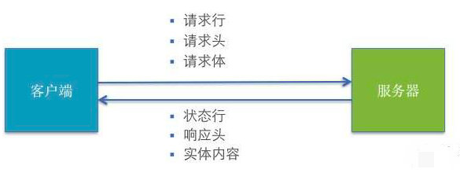
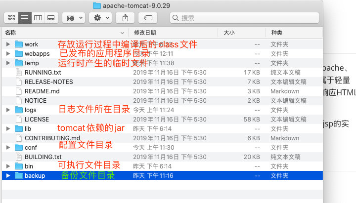
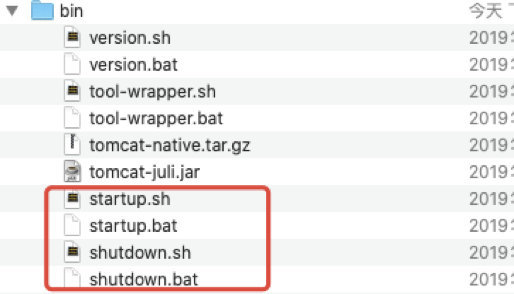
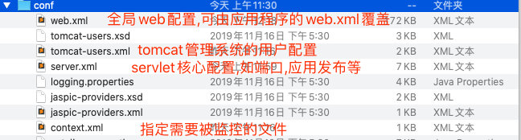
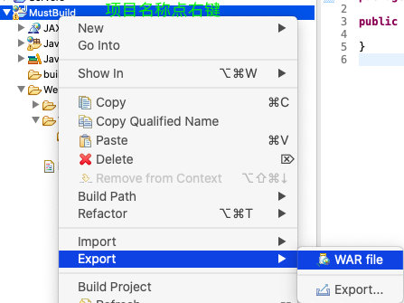
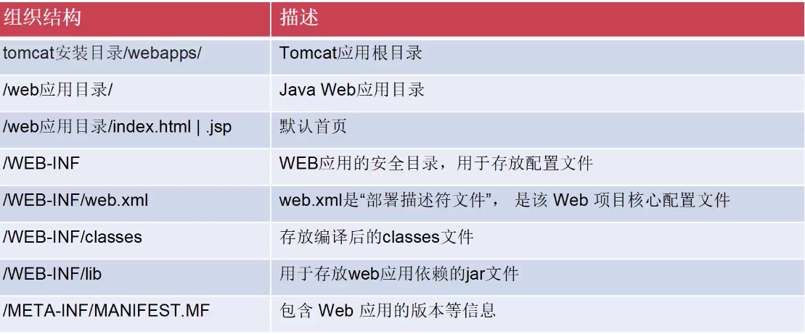

掌握了语言基础以及标准库后,就像学习了英文单词和语法,接下来就是要利用这些知识来编写完整的文章,那么问题时,文章是什么样的文体呢,是短文还是小说,还是诗歌,这也是我们接下来要说的软件结构
特点:所有数据都保存在本地硬盘中
优点:易于使用,结构简单
缺点:数据难以共享,安全性差,更新升级麻烦且不及时
特点:程序分为客户端和服务器端,重要数据存储在服务器
优点:数据共享方便,安全性高
缺点:必须先安装客户端软件,升级维护困难
特点:程序分为浏览器和服务器端,数据全部存储与服务器
优点:开发简单(跨平台),数据共享方便,安全性高,无需安装客户端
缺点:相比C/S结构,执行速度慢,用户体验较弱
强调:B/S本质上也属于C/S
后端服务形式:
单体服务:所有组件部署在同一台机器上
服务集群:相同的服务部署到多个机器上(侧重数量大,计算量不大)
分布式服务:不同的服务部署到不同机器上(侧重计算量大,数量不大)
B/S与web程序很大程度上是可以划等号的,web属于B/S,B/S一定是web程序
web（World Wide Web）即全球广域网，也称为万维网，它是一种基于超文本和HTTP的、全球性的、动态交互的、跨平台的分布式图形信息系统。是建立在Internet上的一种网络服务，为浏览者在Internet上查找和浏览信息提供了图形化的、易于访问的直观界面，其中的文档及超级链接将Internet上的信息节点组织成一-个互为关联的网状结构,称为万维网;
internet作为网络服务的基础,web则是建立在internet之上以HTML文档为载体,以超链接作为链接纽带的另一张网
举个例子:
我们可以依托于公路(internet)上,在某个位置(ip)建立一个工厂(web站点),生成的产品(html文档)就顺着高速公路(internet)进行运输;
而文档中可能指向另一个站点的超链接所以你可以从当前站点跳转到另一个站点,许多的超链接连接着不同的站点形成的网络就是万维网网页是web应用程序最重要的元素
当我们在浏览器输入网址后，经过一段复杂而又快速的程序，网页文件会被传送到你的计算机，然后再通过浏览器解释网页的内容，再展示到你的眼前
Web的主流技术少不了 socket,http协议,数据库,并发等关键技术；无论是什么语言都需要解决这些技术问题,也有很多语言实现了上述技术,那为什么选择Java呢?
Java向来以严谨,稳定,标准化著称,这些特性对于企业开发环境下尤其的重要,尽管出现了一些语法非常简单灵活的语言,例如python,php等,但是灵活带来的就是不严格,不标准,这些风险是企业所不希望承受的;所以JavaEE至今任然占领了绝大多数的企业Web开发环境;
web指的是万维网,是基于internet之上的网络信息服务,以html文件做为信息的载体,在软件结构上属于BS结构,其拥有如下优点:
安全性: 数据存储在服务器端
便捷性:无需安装客户端,跨平台
易维护性:更新升级只需要修改服务器端即可
HTTP采用请求(Request)响应(Response)的模型。
思考一下:服务器是否可以不返回响应数据?
请求与相应必须是对称的,一次请求对应一次响应
（1）客户端socket连接到Web服务器
（2）利用TCP发送HTTP请求数据
（3）服务器接受请求并返回HTTP响应
（4）客户端收到数据后请求断开
（5）服务器断开-客户端断开
（6）客户端浏览器解析HTML内容

当客户输入：www.baidu.com之后，
1.客户端会先向DNS服务器发送解析请求(采用UDP协议)DNS服务器最终会返回域名对应的主机IP地址给客户端
2.与服务器建立TCP链接,默认使用80端口
3.组织HTTP请求数据发送给服务器
4.服务器接收HTTP请求数据
5.服务器对请求数据进行处理
6.将处理完的数据组织成HTTP格式返回给客户端
7.客户端收到数据,发送断开请求,服务器断开,客户端断开
8.客户端解析HTTP响应数据,根据文档类型渲染内容到窗口中
目前大多数web开发采用的都是JavaEE,那么JavaEE与web到底是什么关系呢
JavaEE是一套完整的企业应用程序解决方案,而web应用程序相关的技术也包含在内,也就是说:JavaEE平台包括了web技术规范
并且很多厂商根据JavaEE规范开发出了很多流行的web产品,所以JavaEE称为了开发web程序的首选
JAVAEE 是Java的企业版本
相对于SE扩展了更多企业所需要的服务和接口
需要强调的是JAVAEE仅仅是制定了一套协议规范,并不是真正的实现,其指导其他厂商应当如何实现企业服务和API
分布式系统(C/S)相关:
数据库相关:
web相关:
邮件处理:
公共的:
使用JNDI前:
Connection conn=null;
try {
Class.forName("com.mysql.jdbc.Driver", true, Thread.currentThread().getContextClassLoader());
conn=DriverManager.getConnection("jdbc:mysql://MyDBServer?user=xxx&password=xxx");
......
conn.close();
} catch(Exception e) {
......
} finally {
......
}JNDI配置数据源:
<?xml version="1.0" encoding="UTF-8"?>
<datasources>
<local-tx-datasource>
<jndi-name>MySqlDS</jndi-name>
<connection-url>jdbc:mysql://localhost:3306/DB1</connection-url>
<driver-class>com.mysql.jdbc.Driver</driver-class>
<user-name>root</user-name>
<password>rootpassword</password>
<exception-sorter-class-name>org.jboss.resource.adapter.jdbc.vendor.MySQLExceptionSorter</exception-sorter-class-name>
<metadata>
<type-mapping>mySQL</type-mapping>
</metadata>
</local-tx-datasource>
</datasources>使用JNDI后:
Connection conn=null;
try {
Context ctx = new InitialContext();
Object datasourceRef = ctx.lookup("java:MySqlDS");
//引用数据源
DataSource ds = (Datasource) datasourceRef;
conn = ds.getConnection();
......
c.close();
} catch(Exception e) {
......
} finally {
......
}Web服务器：JavaEE下web服务器也包括了解析servlet和jsp的能力其他语言下名称不同例如VB中的ASP
应用服务器：JavaEE下指实现了EJB相关协议的 如Jboos,weblogic
中间件： 不直接面向客户,而是提供中间服务,如 redis,ActiveMQ
Tomcat
开源免费,轻量级的纯Web服务器
WebLogic
Oracle下用于开发、集成、部署和管理大型分布式Web应用,网络应用和,数据库应用的Java应用服务器,收费
IIS
Microsoft旗下仅用于Windows平台
JBoss
免费开源的应用服务器,实现了EJB,JMS等分步式相关协议的应用服务器,无法直接用于web应用程序,需搭配Tomcat
Tomcat是Apache 软件基金会（Apache Software Foundation）的Jakarta项目中的一个核心项目，由Apache、Sun 和其他一些公司及个人共同开发而成。 Tomcat 服务器是一个免费的开放源代码的Web应用容器，属于轻量级应用服务器。对于一个初学者来说，可以这样认为，当在一台机器上配置好tomcat服务器，可利用它响应HTML页面的访问请求。
严格地说Tomcat是一个web应用容器,因为其不仅仅包含了最基础的web服务能力,同时包含了Servelet与jsp的实现,所以你看会听到本人用web容器来描述tomcat
官网地址:http://tomcat.apache.org,根据系统版本选择即可
其实绿色软件,下载解压即可使用

在bin文件夹中有以下文件:
startup.bat 用于启动tomcat
shutdown.bat 用于关闭tomcat
注意:需要在CMD中执行,linux系统中执行文件后缀为sh并且需要执行权限


利用jar 打包为war 后放置webapps下
可利用eclipse直接打包war,省去了手动编译的麻烦,项目名称右键->export->War File即可
直接复制项目所有web资源到webapps下
在server.xml的Host标签中添加context
<Host>
<Context docBase="/Users/jerry/Downloads/apache-tomcat-9.0.29/webapps/TEST2" path="/TEST2" reloadable="true"></Context>
</Host>需要强调的时,发布前必须先编译所有java原文件
javac -cp /Users/jerry/Downloads/apache-tomcat-9-2/lib/servlet-api.jar MyServlet.java
#多个文件可以使用通配符 ./*.java默认情况下eclipse会自动编译项目,可以在项目根目录下找到classes文件夹把他访问WEB-INF下即可运行
图片太占篇幅放到另一篇中了
Eclipse和IDEA配置tomcat

[image-20191203233222312](
...............
转载请注明出处